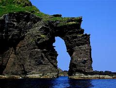

삼국 시대: 독도에 대한 최초의 기록은 삼국사기와 삼국유사에 등장합니다. 신라 지증왕 때인 512년, 신라 장군 이사부가 우산국(울릉도와 독도를 포함한 지역)을 정벌했다는 기록이 있습니다.
조선 시대: 조선 초기부터 독도는 한국의 영토로 인식되었습니다. 조선의 각종 문서와 지도가 이를 증명합니다. 세종실록지리지, 신증동국여지승람 등에는 울릉도와 독도에 대한 기록이 있으며, 이를 통해 조선이 독도를 관할했음을 알 수 있습니다.
대한제국 시기: 1900년 대한제국 고종 황제는 칙령 제41호를 통해 독도를 울도군에 포함시켜 관할하게 했습니다. 이는 대한제국이 독도를 공식적으로 영토로 선언한 중요한 근거입니다.
일제강점기: 1905년 일본은 독도를 시마네현에 편입시켰습니다. 이때부터 독도는 일본의 영토로 주장되기 시작했으며, 이는 현재까지 이어지고 있는 영토 분쟁의 시작점입니다.
해방 이후: 제2차 세계대전 이후, 일본은 독도를 포함한 모든 점령지에서 철수하게 되었고, 독도는 대한민국의 관할 아래 들어갔습니다. 하지만 일본은 여전히 독도에 대한 영유권을 주장하고 있습니다.
현대: 독도에 대한 영유권 분쟁은 현재까지도 계속되고 있습니다. 대한민국은 독도에 경찰과 경비대를 상주시켜 실효 지배를 하고 있으며, 일본은 이를 국제 사회에 문제로 제기하고 있습니다.
독도는 단순한 작은 섬이 아니라, 한국의 역사와 주권의 상징으로 여겨지며, 이를 둘러싼 역사적, 정치적 논쟁은 오늘날까지 이어지고 있습니다.
